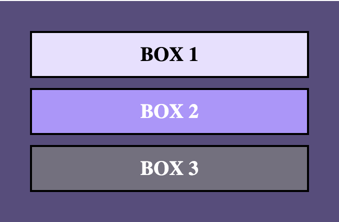

Pozycja elementów na stronie
Przy pomocy atrybutu position: możemy zmienić pozycję elementu na stronie.
.box {
position: relative;
top: 0;
}
Position może posiadać 6 różnych wartości:
- static
- relative
- absolute
- fixed
- sticky
- inherit
static
Każdy element domyślnie posiada tę wartość. Ustawianie /right/top/bottom/z-index w tym przypadku nie działa. 
relative
Element pozostaje widoczny dla sąsiednich elementów, ale left/right/top/bottom/z-index działają, więc możemy ten element przesunąć w inne położenie.
.box2
{
background-color: #B294FF;
color: white;
position: relative;
top: 20px;
left: 20px;
}

absolute
Element zachowuje się, jakby go nie było w porządku innych elementów. Jest "wyjęty".
Jeżeli "rodzic" (tutaj class="background") nie ma ustawionej pozycji na: relative, to
BOX 2 ustawi swoją pozycję względem body.

.box2
{
background-color: #B294FF;
color: white;
position: absolute;
top: 0;
left: 0;
}
Po ustawieniu position: relative; dla "background":
fixed
Element zachowuje się bardzo podobnie jak w przypadku position: relative;. Różnica polega na tym, że zawsze odnosi się z pozycją do całej strony i nie działa na niego przewijanie strony.
sticky
Nie działa we wszystkich przeglądarkach
Zachowuje się jak position: relative;, do momentu aż przewijanie strony zaprowadzi go do ustawionego miejsca. W miejscu tym zachowuje się jak position: fixed; (zostaje tam "przyklejony").
inherit
Można użyć, żeby nadać atrybut position taki sam, jak u "rodzica".